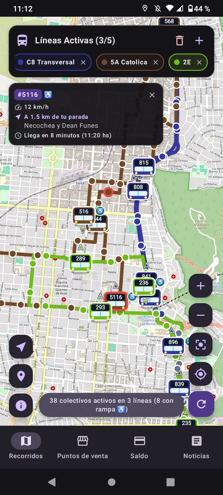
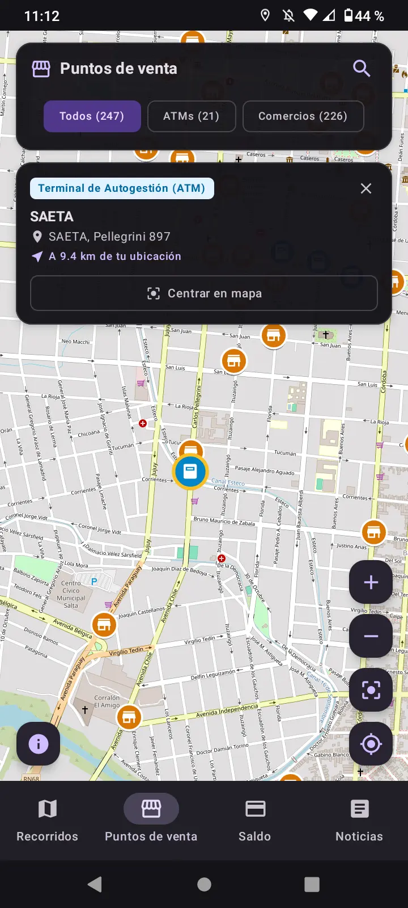
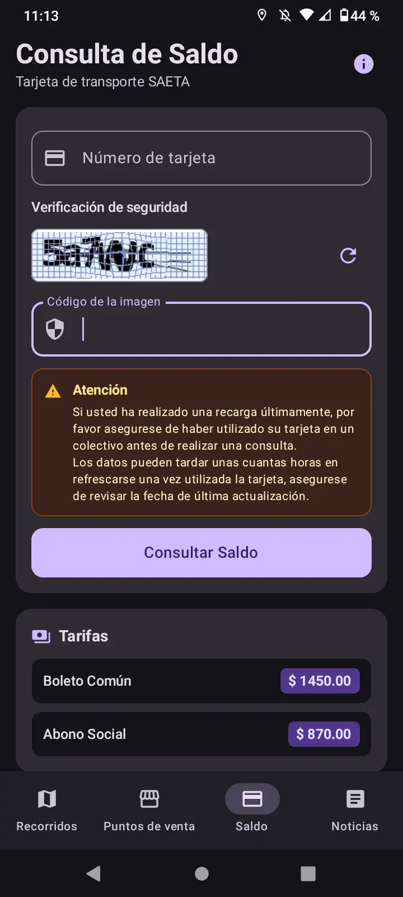
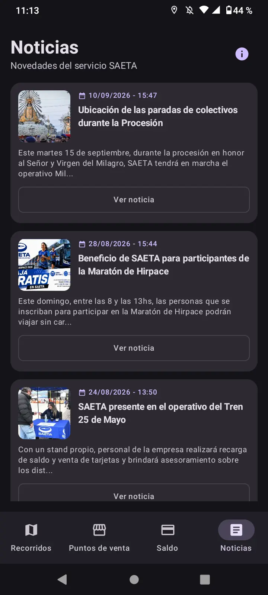

Recorridos en Vivo
Posiciones GPS de colectivos en tiempo real sobre el mapa de Salta.
Visualización de transporte urbano e interurbano en Salta
Güemaps es una aplicación rápida y de código abierto para seguir colectivos en tiempo real, encontrar puntos de recarga, consultar saldo y ver novedades del servico de transporte.
Conoce la interfaz sencilla, intuitiva y rápida de Güemaps

Posiciones GPS de colectivos en tiempo real sobre el mapa de Salta.

Ubica comercios y cabinas para recargar tu tarjeta de transporte.

Verifica el balance disponible de tu tarjeta de transporte.

Avisos oficiales de desvíos, cortes e interrupciones del servicio.
Diseñada para hacer tus traslados diarios en Salta más previsibles
Consulta la ubicación exacta de las unidades de transporte urbano e interurbano con cálculo inteligente de velocidades y movimiento.
Sigue múltiples líneas a la vez sobre el mismo mapa con colores claramente diferenciados para planificar combinaciones de viaje.
Consulta rápidamente el saldo de tu tarjeta para asegurarte de tener crédito suficiente antes de subir al colectivo.
Localiza con facilidad comercios, kioscos y terminales habilitadas para cargar saldo en tu tarjeta cerca de tu ubicación actual.
Lee las novedades, cambios en paradas y desvíos programados directamente desde la app, disponibles incluso sin conexión.
Licenciado bajo GNU GPLv3. Sin rastreadores de publicidad y sin telemetría invasiva.
Güemaps es un proyecto libre y comunitario. Aceptamos colaboraciones bajo la licencia GNU GPLv3, revisa las condiciones de contribución en el repositorio de GitHub.
Si encontraste útil esta aplicación y quieres colaborar conmigo, puedes invitarme un café. El café es rico y ayuda bastante para programar durante horas!